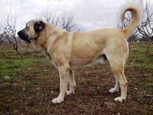
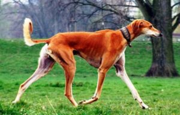
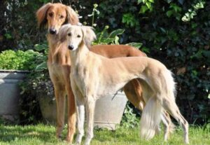
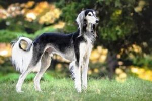
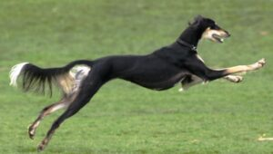
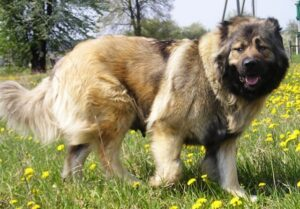
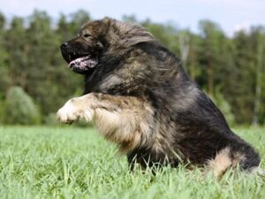
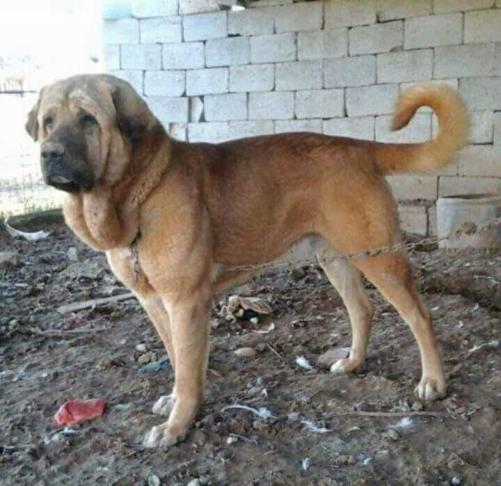

در ایران هم مثل کشورهای دیگه نژادهای سگ اصیل و قدیمی زیادی وجود دارن که ممکنه ما خیلی از اونها رو نشناسیم؛ چون متاسفانه طبقهبندی درست و یکپارچهای برای نژاد سگ های ایرانی وجود نداره.
به طورکلی باید نژاد هر یک از سگها ثبت بشه و براشون کانال ساخته بشه تا خلوص و اصالتشون حفظ بشه.
اما چون اکثر انواع نژاد سگ موجود در ایران هنوز ثبت جهانی نشدن پیدا کردن سگهای اصیل قدیمی و حفظ خلوص و اصالتشون در ایران کار سختیه.
خیالت راحت، ما این راهو بلدیم و توی این مقاله از پت پرس قراره که ۶ نژاد سگ ایرانی از جمله سگهای سرابی، تازی (سالوکی)، قفقازی و سنگسر (مازندرانی)، سگ قدرجونی اصفهان و سگ پژدر کردی رو معرفی و ویژگیهای اونها رو بررسی میکنیم.
۱. سگ سرابی، سگ چوپان ایرانی
سگ سرابی در سالهای اخیر ثبت جهانی شده و به عنوان سگ ایرانی در جهان شناخته شده. چون این سگ جثه خیلی بزرگی داره بهش ماستیف ایرانی یا سگ چوپان ایرانی هم میگن. سگ سرابی نسبت به شرایط آب و هوایی مقاومه و راحت با هر آب و هوایی وفق پیدا میکنه.
طول عمری حدود ۱۲ تا ۱۷ سال داره و معمولاً از ۱۴ ماهگی به بلوغ میرسه.
اگر دوست دارین این نژاد سگ ایرانی رو بیشتر بشناسین، ویدیوی کامل معرفی این سگ که یکی از قوی ترین سگهای ایران هست رو در کانال یوتیوب پت پرس تماشا کنین.
توجه: با قندشکن وارد شوید!
مشاهده ویدیو در کانال یوتیوب پت پُرس
تاریخچه سگ سرابی
زادگاه این سگ، سراب آذربایجانه. دقیق مشخص نیست که نژاد سگ سرابی از کجا و کی در سراب ایران پیدا شده ولی نظریهها میگن این نژاد سگ از دوران آشوریان و یا از سگهای جنگی ایران باستان مشتق شده. ایرانیها بین همسایههاشون به داشتن قدرتمندترین سگها معروف بودن.
نقش سگ سرابی در ایران باستان به قدری مهم بوده که یک مجسمه بزرگ از اون در کاخ آپادانای تخت جمشید پیدا شده. امروز این مجسمه در موزه ایران باستان نگهداری میشه. این نژاد یکی از محبوبترین انواع نژاد سگ موجود در ایران به حساب میاد.

ویژگیهای ظاهری سگ سرابی
- سگ سرابی سر بزرگ و اندام درشت، عضلانی و تراشیده داره.
- پوست دورگردنش افتاده و چروکه، فک قوی و پنجههای پهن داره و معمولاً اضافه وزن نداره.
- رنگش زرد، قرمز، سیاه و کرم هست.
- بعضی از اونها کاملاً سیاهن و رو سینهشون خط سفید دارن و متداول ترینشون هم کرم رنگه و پوزه سیاه داره.
- وزن جنس نر ۵۰ تا ۸۰ کیلوگرم و وزن جنس ماده ۴۰ تا ۶۰ کیلوگرمه.
- اگر سگ سرابی در شرایط خوبی نگهداری بشه تا ۱۰۰ کیلوگرم هم ممکنه وزن داشته باشه.
- قد سگ سرابی حدود ۷۰ تا ۹۰ سانتیمتره.
- شباهت ظاهری با سگ کانگال ترکیه داره ولی سگ سرابی جثه بزرگتری داره.
خصوصیات اخلاقی سگ سرابی
سگ هوشیار و شجاعیه و به راحتی از گله در مقابل گرگ، گراز و حیوانات بزرگتر از خودش دفاع میکنه.
کاملا تربیت پذیر و فرمانپذیره.
صاحبش و افراد خونواده رو میشناسه و باهاشون مهربونه ولی با غریبهها رابطه خوبی نداره و بهشون اعتماد نمیکنه.
برای من با علایق، سبک زندگی و شرایط محیط اطرافم چه نژادی از بقیه بهتر و سازگارتره؟ این کتاب به این سوال پاسخ میده. یه تست داره، میزنی و میرسی به بهترین نژادی که برات خوبه و با راهنمایی های بعدی کتاب درباره جنسیت و اسم سگ تصمیم میگیری.
۲. سگ تازی (سالوکی)، دونده چابک و تیزپای ایرانی!

نژاد سگ تازی یا سالوکی از انواع سگهای شکاریه و در آسیا و خاورمیانه برای شکار پرورش داده میشه و امروزه به عنوان سگ خانگی هم نگهداری میشه.
سگ تازی در همه نوع آب و هوای ایران وجود داره، این سگ دونده ماهریه و سرعت زیادی داره، بخاطر همین راحت میتونه آهو و خرگوش رو دنبال کنه.
در اسطورهها و کتابهای قدیمی ایرانی زیاد در مورد سگ تازی یا سالوکی نوشتن. حتی سلطان محمود غزنوی خونه مخصوصی برای سگهای تازیش داشت که به اون تازی خانه میگفتند. هر کدوم از سگهای تازی سلطان محمود خدمه و مسئول (که بهشون تازی کش باشی میگفتن) و گردنبندهای جواهرنشان داشتند.
سگ تازی طول عمری حدود ۱۰ تا ۱۲ سال داره.

تاریخچه سگ تازی (سالوکی)
سگ تازی یا سگ سالوکی سگی خاص و زیباست که اصالتش به ایران باستان و منطقه خاورمیانه برمیگرده.
سگ سالوکی با نامهای سگ تازی، تازی ایرانی، گری هوند ایرانی، سگ سلطنتی مصری و… هم شناخته میشه و یکی از قدیمیترین گونههای سگ اهلی به شمار میره.
قدیمیترین آثار حضور سگهای تازی در منطقهای یافت شده که قدیمیترین محل سکونت بشر در دشت بوده.
در تپههای باستانی سیلک، در نزدیکی شهر کاشان، علاوه بر استخوان حیوانات اهلی دوران پیشین، استخوانهای یک سگ تازی هم به دست اومده که متعلق به هزاره چهارم پیش از میلاد بوده.
در بعضی از ظروف سفالی نقوشی از سگ تازی در تعقیب حیواناتی مثل گوزن، آهو و بز کوهی دیده میشه که در نهایت دقت کشیده شده.
سفالینههای کشف شده از تل باکون در نزدیکی تخت جمشید نمونههای منحصر به فردی از نقوش تازی از ۴۲۰۰ تا ۳۸۰۰ سال پیش از میلاد رو به نمایش گذاشته.
باریکی اندام، دستها و پاهای بلند و کشیده، پوزه باریک و دمی حلقه مانند همه از خصوصیات بارز سگ تازی هست که روی این سفالها دیده میشه.

ویژگیهای ظاهری سگ تازی (سالوکی)
- سر دراز و باریک
- گوشهای بلند، آویزون و پوشیده شده از موهای ابریشمی
- گردن دراز و عضلانی
- سینه کشیده و باریک
- پاهای باریک
- زانوهای خمیده که بهش قدرت پریدن و تاختن میده
- دم بلند و رو به پایین که در حالت عادی اون رو به شکل منحنی نگه میداره
- قدجنس نر حدود ۵۷ تا ۷۰ سانتیمتره اما جنس ماده ممکنه به طرز محسوسی کوچکتر باشه.
رنگهای سگ تازی (سالوکی)
- سفید
- کرم
- حنایی
- طلائی
- قرمز
- خاکستری
- برنز
- سیاه و برنز
- سه رنگ (سفید، سیاه و برنز)
خصوصیات اخلاقی سگ تازی
- سگ تازی یا سگ سالوکی سگی ظریف و سریعه.
- کاملاً از صاحبش اطاعت میکنه.
- نگهبان خوبیه و حالت تهاجمی نداره.
- آرام، پرمحبت و باوفاست.
- معمولاً با یک نفر خو میگیره.
- برای بچهها پیشنهاد نمیشه.
- با سایر سگها خصوصاً هم نژاد خودش به خوبی کنار میاد.

بیماریهای سگ تازی (سالوکی)
سگ تازی به طور ژنتیکی مستعد ابتلا به بیماریهای چشمی و سرطانه.
ممکنه دچار آفتاب سوختگی خصوصاً در ناحیه بینی بشه.
نکات نگهداری از سگ تازی (سالوکی)
نگهداری از این سگ در آپارتمان توصیه نمیشه.
سگ سالوکی برای فعالیتهای روزانه و دویدن نیاز به فضای آزاد داره.
بهتره در مواقع استراحت در جایی داخل خونه که گرم باشه نگهداری بشه، البته گرمای زیاد هم میتونه براش آزاردهنده باشه.
آموزش سگ تازی یا سالوکی باید با حوصله و محبت باشه.
به دلیل داشتن اندام بسیار لاغر باید از انجام کارهای خشن معافش کرد.
خوی نژاد سگ تازی یا سالوکی برای تعقیب و شکار جوندگان و حیوانات کوچک خوبه.
اگه سگ قابل کنترلی میخواین بهتره از سنین پایین اون رو تحت آموزش قرارش بدین.
نگهداری پرنده، خرگوش، گربه و خوکچه هندی در کنار سگ سالوکی پیشنهاد نمیشه.
انواع سگ تازی (سالوکی)
- تازی سلوکی: در اشعار خاقانی و نقاشیهای مینیاتوری کمال الدین بهزاد دیده میشه.
- تازی کردی: در غرب و شمال غرب ایران یافت میشه.
- تازی شرق ایران: در استان خراسان هست و شبیه سگ تازی کردیه ولی اندام درشت تری داره.
- تازی کوسه: در مناطق جنوب غرب و جنوب شرق ایران وجود داره و بدن و گوشهای کم موتری نسبت به انواع دیگه داره.
- تازی بلوچی: در استان سیستان و بلوچستان وجود داره و موهای بلند و درهم تنیده داره.
۳. سگ قفقازی شاهسون، سگ ایرانی غول پیکر

سگ قفقازی سگ گله هست و در کشور ما نامهای دیگهای مثل سگ شاهسون یا سگ قفقازی شاهسون هم داره و بیشتر در مشکین شهر اردبیل زندگی میکنه.
محل زندگی سگ قفقازی مناطق شمالی و حاشیه دریای خزره و متأسفانه به اشتباه درکشور روسیه ثبت شده و سگ روسی محسوب میشه.
از اونجا که سرزمین قفقاز در گذشته بخشی از قلمرو ایران بوده و بعد از قرارداد ترکمانچای به کشور روسیه تعلق گرفته تا سالها روسها از وجود این نژاد سگ اطلاعی نداشتن.
سگ قفقازی حدود ۱۰ تا ۱۲ سال عمر میکنه.
انواع سگ های ایرانی قفقازی
سگ قفقازی گرجی
این سگ نسبت به انواع دیگه بزرگترین جثه رو داره و به سگ خرسی» هم معروفه.
سگ قفقازی ارمنی
قفقازی ارمنی کمی از نوع گرجی کوچکتره، بدنش مربعی شکله و موهای کوتاه تری داره.
این نژاد از نظر رنگ با دو نوع دیگه متفاوته و رنگهای خاکستری و ترکیبی از چند رنگ هم داره.
سگ قفقازی آذری
نژاد آذری خودش به دو نوع «کوهپایهای» و «قلهای» تقسیم میشه.
- سگ قفقازی قلهای از لحاظ ظاهری به نوع گرجی شبیهتره، دارای پاهای بلنده و به رنگهای زرد روشن و نارنجی دیده میشه و دارای پوزه با صورت سیاه رنگه.
- سگ قفقازی کوهپایهای از تمام گونهها کم موتر و کوچکتره و با نام گامپر» هم شناخته میشه.
ویژگیهای ظاهری سگ قفقازی
- اندامی بزرگ و عضلانی
- گوشهای بلند
- دم بلند و پرپشت که با موهای زیادی پوشیده شده.
- چشمهای تیره، کوچک و تخم مرغی شکل (در برخی از گونهها چشمهای قرمز هم دیده شده).
- تنوع رنگی زیاد از جمله سفید، قهوهای و خال خالی.
- وزن جنس نر حدود ۵۰ تا ۱۵۰ کیلوگرم و وزن جنس ماده ۴۵ تا ۱۴۰ کیلوگرمه.
- قدی بین ۶۵ تا ۷۵ سانتیمتر داره.
خصوصیات اخلاقی نژاد قفقازی
- قدرتمند
- قابل اعتماد
- مناسب برای نگهبانی
- شجاع و نترس
- سرسخت
- باوفا
- مناسب برای نگبهانی از بچهها و داشتن رابطه خوب با اونها
- مهربون و بامحبت نسبت به صاحبش
- مهاجم و هوشیار نسبت به غریبهها

نکات نگهداری از سگ قفقازی
سگ قفقازی نیاز به فعالیت بدنی و پیاده روی طولانی داره؛ به همین دلیل برای نگه داشتن داخل خونه مناسب نیست و به حیاط بزرگ نیاز داره.
مثل اکثر نژادهای دیگه باید از سنین پایین تحت آموزش قرار بگیره.
سگ قفقازی میتونه دمای منفی ۴۷ درجه تا ۳۷ درجه سانتی گراد رو تحمل کنه ولی تحمل هوای گرم و مرطوب رو نداره. آب و هوای مناطق سردسیر براش مناسبتره و نسبت به بیماریهای این مناطق مقاومه.
بیماریهای نژاد قفقازی
با وجود اینکه نژاد سگ قفقازی، نژادی سالمه اما مستعد ابتلا به بعضی از بیماریهاست:
- دیسپلازی لگن و ارنج
- چاقی
- نفخ
- مشکلات مربوط به چشم مثل آب مروارید
۴. سگ سنگسر (مازندرانی)؛ سگ ایرانی کوهپیما
سگ سنگسر یا سگ مازندرانی یکی از نژادهای سگ ایرانی هست و برای زندگی در مناطق آب و هوایی شمال ایران مناسبه. ظاهری شبیه به خرس داره و تقریباً بزرگ و کمی ترسناکه!
متأسفانه به دلیل نگهداری نادرست نسل سنگ سنگسری رو به انقراض هست و خلوصش حفظ نشده. در ایران ترکیب نژاد سگها به شدت انجام میشه و این باعث از بین رفتن خلوص سگ میشه.
خاستگاه این سگ مازندران، تهران و سمنان هست و بیشتر در شهرهای زیر وجود داره:
- گرمسار
- مهدیشهر یا سنگسر قدیم
- شاهرود
- دامغان
- سرخه
- فولاد محله
- شهمیرزاد
- فیروزکوه
- دماوند و اطراف آن
ویژگیهای ظاهری سگ سنگسر (مازندرانی)
- جثه بزرگ
- صورتی شبیه به صورت خرس
- دست و پاهای بزرگ و قدرتمند
- سینه عضلانی، بزرگ و پهن
- وجود خالهای مشکی روی پوزه و پاها (این بارزترین خصوصیت ظاهری سگ سنگسری هست!)
- ارتفاع بدن تا جدوگاه حدود ۶۵ تا ۸۰ سانتیمتر
- وزنی حدود ۴۰ تا ۷۰ کیلوگرم که بستگی به اصالت، جنسیت و نژادش داره.
نژاد این سگ در ایران به دلیل بی توجهی، خلوص خودشو از دست داده و جثه کوچکتری پیدا کرده. هرچند کسانی هم بودن که برای سگ سنگسر دل سوزوندن و با نگهداری مناسب سعی کردن اصالت این سگ رو حفظ کنن.
شایعترین رنگ سگ سنگسر یا سگ مازندرانی سفید یکدست هست اما میتونه در رنگهای دیگهای مثل سفید با لکههای سیاه، سفید با لکههای قهوهای، سیاه یکدست و قهوهای روشن هم وجود داشته باشه که البته مورد آخر در موارد نادری دیده شده!
این مطلب را هم بخوانید: سگ هایی که تحمل تنهایی دارند
خصوصیات سگ ایرانی سنگسر (مازندرانی)
کوهپیمای بی همتایی هست و بدنش برای کوهپیمایی قابلیتهای زیادی داره.
سگ گله ایرانی هست و طبق گفته اکثر چوپانها و گله دارها همتراز با کل و قوچ میتونه از کوه و صخره بالا بره.
برای مناطق ییلاقی وکوهستانی بسیار مناسبه.
توانایی پیاده روی طولانی و پیوسته در حدود ۱۲۰۰ کیلومتر رو داره.
در ییلاق و قشلاق خسته نمیشه و میتونه پیاده روی کنه، معمولاً ۲ بار در طول سال توسط روستاییها و عشایر به ییلاق و قشلاق برده میشه و اصلاً خم به ابرو نمیاره.
میتونه در شب هم به چرا بره (گله دارها به چرا در شب شوچره میگن) و سگ سنگسری معمولاً از ساعت ۱۲ شب تا ۴ صبح به چرای دوم برده میشه.
میتونه به آسونی در شب نگهبانی بده و یه سگ نگهبان خوبه.
مقاومت بدنی خیلی بالایی داره.
توانایی تحمل هر دو هوای گرم کویری یا هوای سرد کوهستانی رو داره.
این سگ یکی از قوی ترین سگهای ایران هست و در واقع یک سگ جنگنده قویه و در برابر سگهای جنگنده دیگه مثل پشدر، سگ آلابای یا سگ خراسانی عالی عمل میکنه، ضربات خیلی سنگینی داره و شدت ضرباتش به حدی زیاده که میتونه با همون ضربه اول حریفش رو گیج کنه و در مقابلش پیروز بشه.

۵. نژاد سگ قهدریجانی (قدرجونی)
یکی دیگه از نژادهای سگ ایرانی نژاد قهدریجانی هست که به اسمهای سگ قدرجونی یا قدرجانی هم شناخته میشه. زادگاه اصلی این نژاد منطقه قهدریجان در ۵ کیلومتری فلاورجان و ۲۵ کیلومتری شهر اصفهان است و پروروشدهندگان زیادی در این منطقه این نژاد بزرگ و قوی رو پرورش میدن.
ویژگیهای بارز سگ قدریجانی عبارتند از:
- سگ قدرجونی جثه بزرگی داره و قد نرها بین ۶۵-۷۵ و مادهها حدود ۷۰ سانتیمتره.
- وزن سگ قدرجونی نر بالای ۶۰ کیلوگرم و مادهها حدود ۶۰ کیلوگرم هست.
- بسیار مهاجم و خشنه و از هیچ چیزی (حتی گرگ) نمیترسه؛ به همین دلیل بهترین گزینه برای نگهبانی و محافظت از گله است.
- نسبت به شرایط آب و هوایی سخت بسیار مقاومه.
- این نژاد سگ نسبت به صاحبش بسیار وفادار و مطیعه و تا پای جان از مال و جان صاحبش دفاع میکنه.
این سگ برای اینکه به درستی بتونه وظایفش رو انجام بده باید حتما خوب تربیت بشه، وگرنه تبدیل به سگی پرخاشگر و خطرناک میشه. یادتون نره که این نژاد یکی از خطرناکترین نژاد سگ در ایران به حساب میاد.
رنگهای قابل قبول برای سگ قهدریجانی
- سیاه و سفید (بهترین و خالصترین رنگ برای این نژاد)
- خاکستری
- خاکستری و سفید
- سیاه یک دست
تا جایی که ما اطلاع داریم این نژاد هنوز توسط سازمانهای جهانی به عنوان یک نژاد خالص به رسمیت شناخته نشده، بنابراین اطلاعاتی که از اونا داریم گفتههای شفاهی و نظر مردم محلیه و منبع موثق و رسمی در این مورد وجود نداره. اگه شما اطلاعات بیشتری در مورد این نژاد حتما با ما در میان بگذارید.

۶. نژاد سگ پژدر یا پشدر (ماستیف کردی)
سگ پژدر یا سگ پشدر که بهش ماستیف کردی هم میگن یه نژاد سگ بومی منطقه کوهستانی کردستان محسوب میشه که به عنوان یک سگ گله ایرانی ازش استفاده میشه. این نژاد قدمتی ۵ هزار ساله داره و یکی از نژادهای قدیمی توی آسیا به حساب میاد.
این نژاد در بوکان، سردشت، پیرانشهر، مهاباد، سنندج و سقز و هم چنین در قسمت کردستان عراق وجود داره و تعدادشون به چند هزارتا میرسه.
مشخصات ظاهری سگ پژدر
- رنگ ماستیف کردی: معمولا سفید، قهوهای تیره یا روشن و مشکیه
- سر، دم و هیکلی بزرگ
- قد این نژاد: سگ نر ۷۵ تا ۸۰ سانتی متر و سگ ماده بین ۷۰ تا ۷۷ سانتی متر
- وزن: سگ نر ۵۶ الی ۹۱ کیلوگرم و سگ ماده ۵۴ تا ۸۹ کیلوگرم
- پوست پیشانی چروک، فک، پوزه و پنجه قوی
- گوشهای افتادهای که بریده نمیشه
- پوست نرم و شل و البته دو لایه
نکات مهم در مورد نژاد سگ پشدر
- نگهداری: آنها برای زندگی در آپارتمان مناسب نیستند و در باغ و مکان های بزرگ نیاز به پیاده روی روزانه دارند
- طول عمر: طول عمرشون به تغذیه و شرایط نگهداری اونا بستگی داره و میتونه حتی تا ۱۳ سال هم عمر کنه.
بیماریهای این نژاد شامل:
- صرع
- ناهنجاری های مفصل ران مثل دیسپلازی
- ناهنجاری های چشمی
سخن آخر
پت پرس انواع نژاد سگ موجود در ایران رو براتون توی این مطلب معرفی کرده، اگه نژاد سگ ایرانی دیگهای میشناسبد که در این مقاله بهش اشاره نشده برای ما کامنت بگذارید و با معرفیش به کاملتر شدن این مقاله کمک کنید. راستی به نظر شما بهترین نژاد سگ در ایران کدومه؟
سلام ممنون از اطلاعاتتون خیلی عالیه خیلی کمک میکنه…وتقعا متافسم ک جای سگ توی کشور ما بد جا افتاده تا اسم سگ بیاد همه حرف نجس بودنشا میزنن ولی اثلا اینجوری نیس اگه یکم ب سگاموم برسیم حتی بغل کردنشون مشکلی نداره خیلی حال خوبی ب ادم دست میده..
من خودم سگ قدرجونی را خیلی قبول دارم خدای باهوش و قدرتمنده من خودم یه سگ قدرجونی چهار ماه دارم با این سن کم ادم غریبه جرات نداره تو خونه بیاد البته همه بستس ک مشکلی درس نکنه خیلی باهوش تاوادم غریبه تز خونه بیرون نره اروم نمیشه مگر خودم بیام ببینه خودم خستم دیگه اروم میشه بیخودی الکی صرو صدا نمیکنه خدای نگهبانی توی خون این سگ ذات این سگ برای نگهبانی پیشنهاد میکنم ب دوستانی ک سگ برای نگهبانی خونه گله …..میخان از این نژاد بگیرین قیمت عکساشون تو سایتش هست ..و ممنون میشم اگه واسه تربیتشون مقاله بزاین بخونیم ..یا تشکر..
سلام پدرام عزیز،
تو بروزرسانی همین مقاله اضافه شده. ممنون که نظرتون رو با ما به اشتراک گذاشتین.
در مورد سگ قدر جونی
کلا با افراد خونه سازش داره از بچه ها مراقبت میکنه
نصبت به افراد غریبه در برابر صاحبش ارومه
ی سگ مطیع و آموزش دیده ولی در همون صورت یک سگ قوی نترسه
دقیقا یک قلمرو واسه خودش میسازه
من یکی از دوستام یکی از این نژاد رو داره تو باغ گذاشتن
در صورتی که ۹ ماهشه ولی پنجه های بزرگ
گردن کوتاه سگ باهوش و وفاداره
تو اون منطقه ای که هست تمام سگها ازش فرار میکنن
ولی عاشق بچه هاست
سلام محمد عزیز،
ممنون که نظرتون رو با ما به اشتراک گذاشتین.
عالی بود از مجله تون لذت بردم من خودم عاشق سگام و یه سگ ژرمن دارم خیلی خوب میشد اگه این سگارو در مقابل گرگ ارزیابی و برنداز قدرتی فکری و….. میکردین
سلام حمیدرضای عزیز،
سعی میکنیم تو اصلاحیات مقاله به نظر شما هم توجه کنیم 🙂
ی سوال دارم ازتون خیلی برام مهم
میخوام بدونم سگ سنگسری ثبت نژاد شده یا ن یعنی تو دنیا میشناسنش؟
سلام محمد عزیز،
ثبت نژادی معمولا خاص هر کشوره و حتی ممکنه بعضی نژادای معمول توی لیست نژادی یه کشور خاص نباشه.
سگ سنگسری به نسبت بقیه نژادای ایرانی کمتر شناخته شده هست.
سلام تبریک میگم بخاطر سایت زیبایی ک دارید
من بچه مازندرانم سگ سنگسری واقعا عالیه ولی خیلی کم شده
کاش یکی این نژاد دوباره احیا میکرد خداییش اگ هم وطن های ایرانی عزیز ما بدونن چ سگ خوب و قوی و بشدت باهوشی واقعا براش سر و کله میشکونن
خودم حاضرم کلی براش پول بدم برای ویلا و خونه حیاط دار عالی واقعا
کسایی ک اهل مازندران هستن میدونن قیمت سنگسری تو شمال بیشتر از دوبرمن و ژرمن شپرد
خودم با چشم خودم دیدم ی گرگ کاملا تیکه پاره کرده بود و شکمشو پاره کرده بود
سلام محمد عزیز،
ممنون که نظرتون رو با ما به اشتراک گذاشتین.
متاسفانه هر کشوری سگای بومی خودشو داره که زیاد شناخته شده نیستن.
سگ خراسانی. سگ پژدر و سگ قدرجونیه رو هم بزارید اینا هم ه ایرانین
سگ قدریجونی رو از قلم انداختین
سگ ساده محلی
ممنون از نظرتون
شما از سگ قدرجانی نامی نبردین که مایه تاسفه
میثم جان
به زودی به مقاله اضافه میشه. ممنون از نظرتون
از سگ بختیاری که گفته میشه باهوش ترین نوع سگ در جهان هست متاسفانه نامی نبردین..
سلام مقاله تون خوب بود ممنون
یه مشکلی با سگم دارم وقتی میبرم بیرون شروع میکنه به تعقیب کردن حیوانات دیگه و همین طور ماشین ها میره دنبالشون چیکارکنم چجوری از دامپزشکتون راهنمایی بخوام
سلام دوست عزیز برای حل این مشکلات کتاب داریم لینکشو میفرستم بخونید:
کتاب جامع تربیت سگ